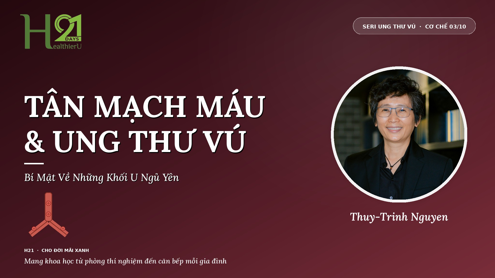

Tân Mạch Máu & Ung Thư Vú — Bí Mật Về Những Khối U Ngủ Yên
Cứ 10 phụ nữ tuổi 40–50 thì có gần 4 người mang khối u vi mô trong vú — nhưng chỉ 1% được chẩn đoán ung thư. Điều gì quyết định khối u ngủ yên hay bùng lên thành bệnh? Câu trả lời nằm ở tân mạch máu.
TT
Thuy-Trinh Nguyen
Khoa Học Gia · Nhà Sáng Lập H21 - Cho Đời Mãi Xanh
www.h21chodoimaixanh.com
⏰ Đọc trong 9 phút

🌿 Điểm Khởi Đầu
Có một sự thật mà ít người biết: gần như tất cả chúng ta đều mang trong mình những khối u vi mô. Chúng nhỏ hơn đầu kim, không đủ lớn để hiện trên bất kỳ hình ảnh chẩn đoán nào, và đa số sẽ ngủ yên suốt đời. Chỉ một tỷ lệ nhỏ “thức dậy” và trở thành bệnh. Y Học Lối Sống Có Trách Nhiệm đã dạy tôi: bữa ăn hằng ngày là một trong những yếu tố quyết định khối u sẽ ngủ tiếp hay sẽ bùng lên.
39%
phụ nữ tuổi 40-50 có khối u vú vi mô khi giải phẫu (Nielsen, 1987)
1%
trong số đó thực sự được chẩn đoán ung thư vú lâm sàng
1-2mm
kích thước tối đa khối u đạt được nếu không có tân mạch máu
Ba con số này đến từ các nghiên cứu giải phẫu bệnh học kinh điển: phần lớn chúng ta mang sẵn khối u vi mô, nhưng chỉ một phần nhỏ tiến triển thành ung thư thật. Sự khác biệt không nằm ở có hay không có tế bào bất thường — mà ở việc chúng có được nuôi bằng mạch máu hay không.
Phần 1 · Tân Mạch Máu Là Gì?
Angiogenesis (tân mạch máu) là quá trình cơ thể tạo ra mạch máu mới. Đây là cơ chế sinh lý cần thiết và tốt đẹp: giúp vết thương lành lại, giúp thai nhi phát triển, giúp chu kỳ sinh sản diễn ra bình thường.
Ở người trưởng thành khỏe mạnh, quá trình này được kiểm soát chặt chẽ bằng một hệ cân bằng tinh tế giữa các yếu tố kích mạch (VEGF, bFGF) và các yếu tố ức chế (endostatin, angiostatin, thrombospondin). Bình thường, mạch máu mới chỉ mọc khi cơ thể thực sự cần.
Trong cơ thể khỏe mạnh, hai nhóm yếu tố này giữ nhau ở thế cân bằng — mạch máu mới chỉ mọc khi cơ thể thực sự cần đến.
🔬 Điểm khởi nguồn lý thuyết
Năm 1971, TS. BS. Judah Folkman tại Harvard đề xuất một giả thuyết cách mạng: khối u không thể lớn quá 1–2mm đường kính nếu không tạo được mạch máu mới. Không có mạch máu, khối u “chết đói” — thiếu oxy và dưỡng chất.
Giả thuyết này ban đầu bị chế giễu. Hôm nay, nó là nền tảng của cả một lớp thuốc ung thư trị giá hàng tỷ USD (bevacizumab, sunitinib...).
Phần 2 · “Công Tắc Mạch Máu”
Hầu hết mọi người mang trong mình nhiều khối u vi mô suốt đời. Các nghiên cứu giải phẫu bệnh học trên phụ nữ chết vì tai nạn giao thông cho thấy 39% phụ nữ tuổi 40–50 có khối u vú tại chỗ (carcinoma in situ), trong khi chỉ 1% được chẩn đoán ung thư vú trong đời.
Tại sao sự chênh lệch khổng lồ đó? Vì khối u vi mô đó đang ở trạng thái ngủ yên (dormant). Để “thức dậy” và trở thành ung thư thực sự, nó phải bật được “công tắc mạch máu” (angiogenic switch) — kích hoạt cơ thể mọc mạch máu mới nuôi nó.
Cùng một khối u — hai số phận hoàn toàn khác nhau. Yếu tố quyết định: có mạch máu mới nuôi nó hay không.
Phần 3 · Thực Phẩm Chống Tân Mạch Máu
TS. BS. Michael Greger — tác giả sách How Not to Die và nhà sáng lập NutritionFacts.org — đã tổng hợp hàng trăm nghiên cứu về cơ chế này. Ông khẳng định: “Tế bào ung thư thường xuyên xuất hiện trong cơ thể, nhưng không thể phát triển thành khối u nếu không kết nối được nguồn cung máu. Các chất ức chế tân mạch máu trong thực phẩm thực vật có thể ngăn điều đó xảy ra.”
Hàng trăm hoạt chất trong thực vật chặn tín hiệu VEGF — cắt đứt nguồn máu nuôi những khối u vi thể đang âm thầm hình thành.
Dr. Greger chỉ ra rằng khoảng một phần ba các loại ung thư thường gặp có thể được phòng ngừa bằng chế độ ăn lành mạnh dựa trên thực vật, hoạt động thể chất, và duy trì cân nặng khỏe mạnh — và cắt tín hiệu nuôi mạch máu là một trong những cách chính.
🫐
Việt quất & quả mọng
Anthocyanin và pterostilbene ức chế VEGF
🍅
Cà chua (đặc biệt nấu chín)
Lycopene cắt tín hiệu tân mạch máu
🍵
Trà xanh
EGCG ức chế VEGF và bFGF
Nghệ
Curcumin chặn nhiều con đường mạch máu
🥬
Rau họ cải
Sulforaphane ức chế tăng trưởng mạch máu u
🫘
Đậu & đậu lăng
Fiber, saponin, phytate — đa cơ chế
🌰
Hạt lanh & hạt óc chó
Lignan và omega-3 thực vật ức chế VEGF
🫘
Đậu nành nguyên dạng
Genistein — một trong các chất kháng mạch mạnh nhất
Bằng Chứng Từ Can Thiệp Lâm Sàng
Ornish et al. · Journal of Urology 2005 · Proceedings of the National Academy of Sciences
Chế độ ăn thực vật toàn phần đảo ngược tiến triển ung thư
TS. BS. Dean Ornish — người tiên phong của Y Học Lối Sống — thực hiện nghiên cứu lâm sàng trên 93 bệnh nhân ung thư tuyến tiền liệt. Sau 3 tháng theo chế độ ăn thực vật toàn phần, tập thể dục, quản lý stress, và hỗ trợ xã hội: hơn 500 gen thay đổi hoạt động, trong đó các oncogenes thúc đẩy ung thư vú, tuyến tiền liệt, đại tràng bị “tắt”, còn các gen bảo vệ được “bật”. Đây là bằng chứng đầu tiên cho thấy lối sống có thể tác động đến gen ở cấp độ phân tử.
American Medical Association · Chính sách 2024 · Physicians Committee for Responsible Medicine
AMA chính thức đưa plant-based diet vào khuyến cáo phòng ngừa ung thư vú
Năm 2024, do nỗ lực vận động của TS. BS. Neal Barnard (Chủ tịch PCRM), Hiệp hội Y khoa Hoa Kỳ (AMA) lần đầu tiên đưa ra chính sách khuyến cáo bác sĩ giáo dục bệnh nhân về 4 chiến lược giảm nguy cơ ung thư vú — dẫn đầu là chế độ ăn thực vật. Khảo sát 2024 cho thấy: chỉ 28% phụ nữ Mỹ biết chế độ ăn có thể giảm nguy cơ ung thư vú — và 72% chưa bao giờ được bác sĩ tư vấn về điều này.
Gen của bạn không phải là số phận của bạn. Mỗi bữa ăn là một cơ hội để gửi tín hiệu bảo vệ đến từng tế bào trong cơ thể.
— TS. BS. Dean Ornish, Preventive Medicine Research Institute
Phần 4 · Những Câu Hỏi Thường Gặp
Vậy là gần như ai cũng có khối u vi mô trong người?
Đúng vậy, và điều đó không đáng sợ như bạn nghĩ. Cơ thể được thiết kế để giữ các khối u này ở trạng thái ngủ yên suốt đời. Chìa khóa là đừng cung cấp cho chúng lý do để “thức dậy” — bao gồm hạn chế các yếu tố kích mạch (béo phì, đường, viêm mạn) và bổ sung các yếu tố ức chế (thực phẩm kháng tân mạch máu).
Đường có kích tân mạch máu không?
Có, khá rõ ràng. Đường huyết cao và insulin cao kích thích VEGF — yếu tố kích mạch máu chính. Đây là một trong những lý do tại sao tôi nhấn mạnh tránh đường >90% trong tất cả bài viết. Kiểm soát đường không chỉ tốt cho cân nặng hay tiểu đường — nó trực tiếp giảm tín hiệu nuôi khối u.
Tôi đã từng bị ung thư vú — chế độ ăn chống tân mạch máu có giúp được không?
Đây là lúc nó trở nên quan trọng bậc nhất. Tái phát ung thư vú thường xảy ra khi các tế bào ung thư còn sót lại (ở tủy xương, gan, phổi) “thức dậy” và bật công tắc mạch máu. Chế độ ăn giàu thực phẩm kháng tân mạch máu có thể giúp giữ những tế bào đó ở trạng thái ngủ yên. Trao đổi với bác sĩ điều trị để kết hợp cùng phác đồ chính thức.
💡 Điểm Mấu Chốt
Phần lớn chúng ta mang sẵn các khối u vi mô trong cơ thể. Điều quyết định không phải có hay không có chúng — mà là chúng có được nuôi bằng mạch máu hay không. Đây là “công tắc” giữa ngủ yên vô hại và ung thư lâm sàng.
Mỗi bữa ăn là một cơ hội nhỏ để tiếp tục ức chế tín hiệu tân mạch máu — qua việc thêm việt quất, cà chua nấu chín, trà xanh, nghệ, rau họ cải, dầu ô-liu nguyên chất, đậu nành nguyên dạng. Đây là y học phòng bệnh trong bát canh, không phải trong viên thuốc.
Khi tôi sáng lập H21, mục đích ban đầu là đồng hành cùng những người còn khỏe mạnh — để phòng bệnh từ xa, trước khi căn bệnh có cơ hội xuất hiện. Nhưng nghịch lý suốt hành trình này là: phần lớn học viên tìm đến H21 lại là những người đã được chẩn đoán ung thư. Với họ, H21 đã thực sự trở thành nơi chuyển hóa — kết quả hồi phục mà nhiều học viên đạt được là điều tôi biết ơn, và là minh chứng rằng thay đổi vẫn có thể bắt đầu ở bất kỳ thời điểm nào.
Nhưng qua từng bài viết như bài này, tôi vẫn mong một điều: giá như nhiều người còn khỏe mạnh hơn nữa đọc được những cơ chế này — và bắt đầu chuyển động từ hôm nay, khi cơ thể còn nguyên vẹn. Tân mạch máu không phát đi tín hiệu đau để báo cho bạn biết. Những khối u vi thể cũng không. Bữa ăn hôm nay là lựa chọn thầm lặng nhưng quyết định của ngày mai. H21 là không gian chúng tôi xây dựng cho đúng mục đích đó.
Seri Ung Thư Vú · 10 Cơ Chế
Đây là Cơ Chế 03/10. Còn 7 cơ chế nữa để khám phá.
Tham gia cộng đồng H21 để theo dõi toàn bộ seri — nơi khoa học ung thư được dịch thành hành động cụ thể mỗi ngày.